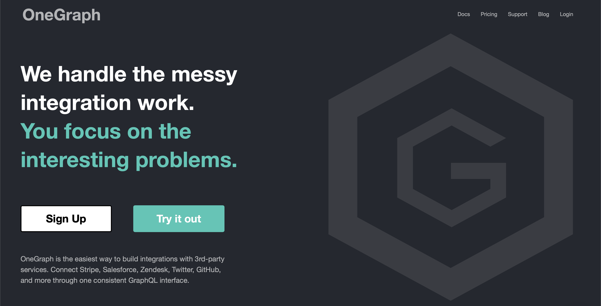

JWT & GraphQL: The Ouroboros of Authorization & Authentication

JAMstack
APIs: What is the JavaScript talking to?
How do they know…
"JSON Web Token"
{
"iss": "OneGraph",
"aud": "https://serve.onegraph.com/dashboard/app/0b33e830-7cde-4b90-ad7e-2a39c57c0e11",
"iat": 1563758630,
"exp": 1564968229,
"https://onegraph.com/jwt/claims": {
"access_token": "3z-kiiioUBTyMOZ_8Yet70xzOzC4"
}
}
Some common claims:
Cool story.
…who are you again?
{
"alg": "RS256",
"typ": "JWT",
"kid": "gXv50C7Jg-xT0wPVAVQp-8C4zIM"
}
"eL5tvRyGO1CFbw9Dv58xlX00jmpmsVid9q42-4iSj4PrBOVl1MZ_xWYVeHv22Xh8S1Cel-mL9lbu7RBhFDNujf4VKJKElkg3J7xd5XpvYFGRHgtT3jj1J0Nx2xM1_9qhn8E0kOOCUIkJqagdG2Mtex7cl_BJ5i5k1PoGbO5PPMzRkdj5QvZbwKbRLi0LzWMiYgWf8C6_IVNt1My3FDwbs-Lg2xvB0aWf2gYIpISp8gRTuZMwTA2B8ugAzDtg-23Xb8OlNH-0DoG2N6MgSoBvDpoRuAJTWUEs2mHbA5HJNvGZUCrggDObbyhPPIu8u"
#+ATTR_REVEAL: :frag (appear)
- Looks like gibberish, actually critical
When making an API request, JavaScript can store/read JWT from:
// SDL (Schema Definition Language)
directive @isAuthenticated on QUERY | FIELD
directive @hasRole(role: [String]) on QUERY | FIELD
type Query {
companies : [Company] @isAuthenticated
}
type Company {
id: String!
name: String!
createdAt: DateTime!
accountBalance: Int @hasRole(roles: ["admin", "finance"])
}
isAuthenticatedDirective: (next, source, args, context) => {
const token = context.headers.authorization;
if (!token) {
throw new AuthorizationError({
message: "You must supply a JWT for authentication!"
});
}
try {
const decoded = jwt.verify(
token.replace("Bearer ", ""),
process.env.JWT_SECRET
);
context.user = decoded;
return next();
} catch (err) {
throw new AuthorizationError({
message: "You are not authentication."
});
}
};
hasRoleDirective: (next, source, args, context) => {
const token = context.headers.authorization;
const expectedRoles = args.roles;
if (!token) {
throw new AuthorizationError({
message: 'You must supply a JWT for authorization!'
});
}
try {
const decoded = jwt.verify(
token.replace('Bearer ', ''),
process.env.JWT_SECRET
);
const roles = decoded.roles.split(' ');
if (expectedRole.some(role => roles.indexOf(role) !== -1)) {
return next();
}
} catch (err) {
return Promise.reject(
new AuthorizationError({
message: `To access ${source.name}, You must be assigned one of the following roles: ${expectedRoles.join(
', '
)}`
})
);
}
}
const schema = makeExecutableSchema({
typeDefs,
schemaDirectives: {
hasRole: hasRoleDirective,
isAuthenticated: isAuthenticatedDirective
}
});
Given we now trust the contents of a token, we need to figure out 2 things:
userId from database (custom)sub from OAuth provider (Google, etc.)userId from API provider (Spotify, GitHub, etc.)email from database/servicequery WhoAmI {
me {
github {
email
id
databaseId
organizations(first: 100) {
nodes {
id
email
login
name
}
}
}
spotify {
email
id
}
}
}
[Demo GraphiQL Explorer]
if (
gitHubEmail === "sean@onegraph.com" ||
gitHubEmail === "daniel@onegraph.com" ||
gitHubOrganizations.find(
organization => organization.name === "OneGraph"
)
) {
finalJwt["role"] = "admin";
} else {
finalJwt["role"] = "user";
}
finalJwt["https://hasura.io/jwt/claims"]["x-hasura-default-role"] = "user";
if (
(gitHubCollaboratorRepositories.find(
repository =>
repository.nameWithOwner === "yukims19/wasm-gameboy-emulator"
) && spotifyEmail === "sean@gmail.com")
) {
finalJwt["https://hasura.io/jwt/claims"]["x-hasura-allowed-roles"] = "admin";
}
if (
(gitHubContributedRepositories.find(
repository.nameWithOwner === "sgrove/riseos-static"
)) &&
(twitterFollowers.find(
follower => follower.screenName === "@sgrove"
))
) {
finalJwt["app_metadata"]["authorization"]["roles"] = "moderator";
}